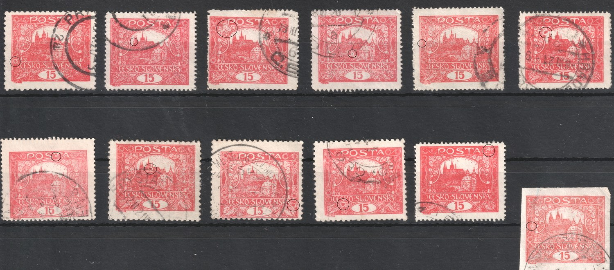
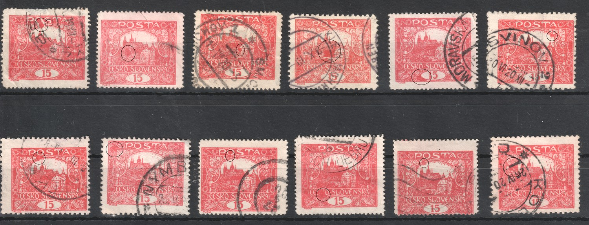
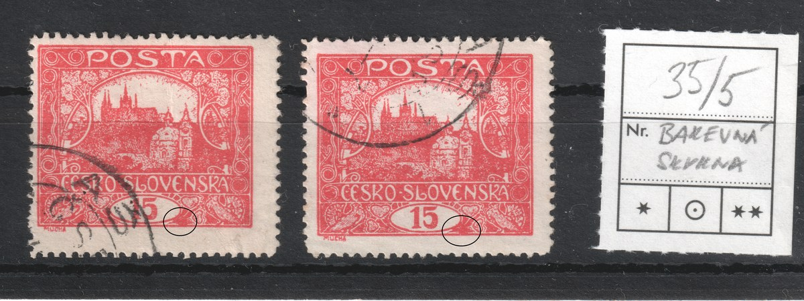
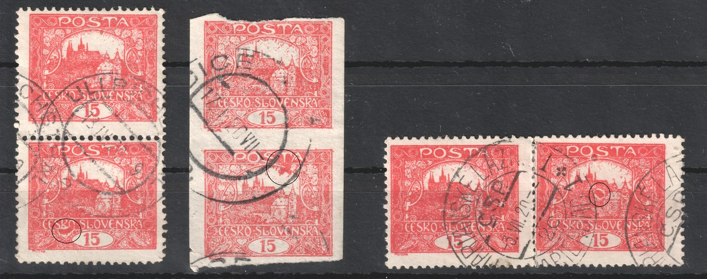

1
1Production flaws
The Hradčany stamps were produced in 1919 in haste, on makeshift equipment and on whatever paper was at hand. The traces of that haste are still visible on the stamps. This page collects the production flaws of the 15h value — deviations that arose while the sheet was being made, not damage suffered after issue. They are arranged by production stage: paper → printing → perforation. How that process ran, and why it produces these particular deviations, is explained on the Letterpress page.
A production flaw is not the same as a catalogue variety. The perforation groups A–H, the drawing types or the shades describe with what and how a sheet was made, and they are regular. A flaw is a disturbance of that same process — random in most kinds, tied to a particular place on the plate in some (white spots). Constant plate varieties, which recur on the same stamp field, belong to plate reconstruction — see the position gallery.
Perforation flaws
Perforating was the last operation and at the same time the one most prone to error. In line perforation every row of holes was applied separately, so a whole sheet was built from dozens of strikes whose accuracy rested on the operator. Hence two opposite flaws: a row too many, and a row missing.
Double perforation
A chapter of its own are copies where the perforating tool passed through one and the same gap twice. Depending on how far apart the two strikes fell, the result looks entirely different: with a small offset the holes overlap and the teeth are left ragged, with a larger one two clearly separated rows appear with a band of paper between them. Both forms are recorded in the collection.
Specimen 1 — two closely offset strikes


On this copy the second strike caught both vertical sides, and only a fraction of the gauge separates it from the first. The rows are therefore out of register by a little: the holes partly overlap and the teeth left between them are narrow and ragged. Along the side, teeth of normal width alternate with conspicuously thin ones and the depth of the cuts varies; in the enlarged detail one can see pairs of closely adjacent holes separated by nothing but a thin strip of paper.
Specimen 2 — two separate rows along the bottom


The copy is identified as field 100 of the third printing plate — the bottom right corner of the sheet, that is, the last row. Here the bottom side was punched by two separate rows of holes one above the other, offset by less than one hole spacing, so that they did not interleave but lie side by side as two parallels. The stamp was separated along the lower of them — that one has the ordinary toothed profile — while the upper row stayed whole: it lies untouched in the margin as a continuous line of round holes, because nothing was torn along it. That is what makes the copy valuable. An unbroken row of holes inside the margin can arise from nothing but a second pass of the tool, so the flaw evidences itself — unlike ragged teeth, which can be mistaken for careless separation.
How the flaw arose
The essence is the same on both specimens: one and the same gutter received two strikes. This can happen with either of the tools used on the issue, but each gets there by a different route — and the two specimens on this page show precisely those two routes.
- A line perforator punches one straight row of holes across the whole sheet; the sheet is then advanced by the size of one stamp and the tool strikes again. A whole sheet is thus built from dozens of separate strikes and the accuracy rests on the operator. If the sheet slipped, was laid in a second time, or the operator lost track of which gutter had already been punched, that gutter receives an extra strike — and since the vertical and horizontal rows were done in separate passes, it can be any of them. This fits specimen 1: both vertical sides are doubled and the offset is so small that the holes overlap.
- A comb perforator punches three sides of a whole row of stamps in one stroke, after which the sheet advances by one row. If that advance fails — the sheet moves too little, or slips — the horizontal part of the comb lands in a gutter the previous stroke has already punched. A doubled horizontal row results, while the vertical sides stay sound, because those are made by the vertical prongs of the comb. That is exactly what specimen 2 shows: two rows one above the other along the bottom, and the vertical sides untouched. Its place in the sheet fits as well. The specimen comes from the last row, and the bottom edge of the last row is closed by a separate final stroke of the comb — the one gutter a stroke merely closes instead of opening the next row at the same time. A repeat of that particular stroke therefore shows exactly where it is seen.
The direction of the doubling therefore hints in itself at which tool was at work. A doubled vertical side points to line perforation; a doubled horizontal row with the vertical sides untouched matches a failure of the advance under a comb. On specimen 2 the gauge confirms it: it is coarser than on specimen 1 and matches comb perforation B. Identifying the copy as field 100 of plate III settles it — the comb struck twice there, with a very small offset.
A double perforation is not a catalogue perforation of its own. Groups A–H describe the kind of tool and the gauge, that is, what the sheet was punched with — a repeated pass of the same tool does not change the gauge, and the stamp is identified from the row that corresponds to the proper pass. It is recorded as a perforation deviation: sought after by collectors, but outside the catalogue arrangement. It is easy to tell apart from the exceptional perforations I and L — there each side carries a single row of holes, merely at a different gauge from the opposite side, whereas in a double perforation one and the same side carries two rows.
Missing perforation
The opposite of a double strike is a pass that never happened at all. An unbroken band of paper is then left between two rows of stamps and the sheet cannot be torn there. The stamps had to be separated with scissors or by tearing, so the finished copy has one or more sides that are smooth, without teeth — and the remaining sides perforated as usual.
Specimen 1 — horizontal perforation missing


Both horizontal perforations are missing: the top and the bottom side were separated with scissors, while the vertical sides are perforated normally. That the cut ran between two stamps is betrayed by the bottom edge — a piece of the neighbouring stamp's frame is still visible on it. Two consecutive horizontal rows were therefore skipped, which with a line perforator means the sheet passed through without a strike twice in a row.
Specimen 2 — vertical perforation missing


Here a single vertical row is missing — the left side. The top, bottom and right sides are perforated. The wide smooth margin on the left carries faint traces of red ink from the neighbouring stamp, so here too the cut ran through the open gutter between two stamps. That makes the copy self-evidencing: had the margin merely been trimmed, paper would be missing from it, not left over.
Specimen 3 — top perforation missing


The third copy is the most telling of the three. The top horizontal row is missing; the left, right and bottom sides are perforated. The wide top margin retains the frame and part of the lettering of the neighbouring stamp — the cut therefore did not run down the middle of the gutter but reached into the design of the stamp above. Such a margin is at the same time the best proof of genuineness: extra paper carrying someone else's print cannot be obtained by trimming teeth away, only by the perforation genuinely having been absent there.
Beware of confusion. The issue also appeared imperforate, and there all four sides are smooth — with a missing perforation at least one side must remain perforated. The flaw can also be faked by trimming the teeth away, so the width of the margin is judged on every copy: a trimmed edge is narrower than normal and traces of the holes tend to remain. For the more valuable combinations (perforation missing on several sides) a certificate is in order.
A related topic: the shift of the perforation against the design. It is not a failure of the tool but an inaccuracy in laying the sheet — so common on the Hradčany issue that it has a part of its own: Perforation shifts.
Perforation shifts
Perforation was punched into the sheet only after printing, as a separate operation on a different machine. The position of the perforating grid relative to the printed design was therefore never fixed, and on the Hradčany issue it departs from the ideal unusually often. The specimens below come from a single collection — 28 items, 29 stamps in all — and cover the whole range, from barely noticeable unequal margins to copies where the perforation runs through the design and a strip of the neighbouring stamp remains at the edge.
Why shifts happen
- The sheet was laid into the machine by hand against stops. Any inaccuracy in laying it shifts the whole perforating grid at once — which is why all the stamps of one sheet tend to be shifted the same way.
- With line perforation each line is punched separately and the sheet is advanced between them. The error of one advance adds to the previous ones, so the deviation grows towards the opposite edge of the sheet; and the two directions were done in separate passes.
- With comb perforation one stroke serves a whole row, so within the row all ten stamps are shifted alike. Irregularity appears only at the boundary between two rows, where two strokes failed to meet.
- Nor is the design itself always in the same place on the sheet. The position of the forme could vary slightly, and such a displacement of the print relative to the sheet edge then adds to that of the perforation.
- The issue was produced in 1919–1920 under makeshift conditions, in haste and on several different machines. An imperfectly set or worn tool and fast working are why shifts are considerably more common on the Hradčany issue than on later ones.
Degrees of shift
- Slight — the margins are of unequal width but the frame stays intact. The commonest state; a question of centring rather than an interesting variety.
- Medium — the perforation reaches into the frame or runs through it. The design is damaged, but nothing of the neighbouring stamp is yet present.
- Strong — a strip of paper with part of the neighbouring stamp's print remains at the edge, or conversely part of the stamp's own design is missing. Such copies are the most telling, since they show directly by how much the grid missed.
A shift is not a plate flaw. It does not arise in the printing plate but during perforating, and therefore does not repeat on the same sheet position — it cannot be used to identify a plate or a position in the sheet. For gauging, however, it is useful: on a shifted copy you can see how far from the frame the row lies, and on a pair or strip whether the perforation is line or comb.
Care with striking copies. A strong shift adds collector appeal, so it is worth checking that the perforation is original: compare the gauge with a documented type of the same plate, and check that the shape and length of the teeth match the stamp's other sides.
Specimens from the collection
The direction is always given as the displacement of the perforating grid relative to the design: shift to the right means the perforation lies further right, leaving a narrow margin on the left and a wide one on the right. Click a specimen to enlarge it.
1Perforation shifted to the right — on the left the row runs hard against the frame, on the right a wide margin remains.
 2
2The horizontal row above was punched high, inside the neighbouring stamp: an extra strip of paper with a trace of its print remains at the top. Horizontally the shift is to the left.
 3
3Marked shift to the right and downwards — on the left the perforation reaches the frame, on the right and below a very wide margin remains.
 4
4Shift downwards — the top row lies right above the frame, a wide margin remains at the bottom.
 5
5Diagonal shift to the right and downwards, by roughly the same amount in both directions.
 6
6Shift to the right and downwards; the top row passes right at the frame, while the bottom margin is wide.
 7
7Horizontally well centred, but both horizontal rows lie close to the frame — there is unusually little room between them.
 8
8Shift to the left and upwards — the bottom row reaches the frame.
 9
9Shift to the left and upwards; below, the perforation almost touches the frame, while margins remain at the left and top.
 10
10Strong diagonal shift to the left and upwards — on the right and below the perforation passes hard against the frame.
 11
11Shift to the right, only slight vertically — a wide margin at the right, a narrow one at the left.
 12
12Shift to the right and upwards; the bottom row lies right below the frame.
 13
13Strong shift to the left — on the right the perforation runs through the frame, on the left a strip of the neighbouring stamp remains at the edge.
 14
14Strong shift to the right — the frame is cut on the left, and a strip of the neighbouring stamp's print remains on the right.
 15
15Shift to the left and upwards — on the right the perforation runs through the frame, margins remain at the top and left.
 16
16Very strong shift upwards — a wide strip of blank paper above the design, the bottom row lying hard against the frame.
 17
17Strong shift upwards; a trace of the neighbouring stamp's print is visible along the top edge.
 18
18Shift to the left and upwards — below, the perforation reaches the frame, above a wide margin remains.
 19
19Horizontal pair. The vertical row between the two stamps is shifted to the right: the left stamp has an unusually wide right margin, while the right one has its left frame cut. Both outer vertical rows also run hard against the frames.
 20
20Extreme shift upwards — nearly half the paper above the design is blank, while below the perforation runs through the design.
 21
21The most telling item of the group: the horizontal row was punched deep inside the neighbouring stamp, so its entire lower edge — value oval 15 included — remains at the top. The stamp's own design is cut at the bottom.
 22
22DOPLATIT 40 h surcharge. Strong shift to the left — the frame is cut on the right, a strip of the neighbouring stamp remains on the left.
 23
23Shift to the right and upwards — on the left and below the perforation passes hard against the frame.
 24
24Strong shift upwards and to the left; a trace of the neighbouring stamp's print is visible along the top edge.
 25
25Shift to the right and downwards — on the left and top the perforation passes hard against the frame, wide margins remain at the right and bottom.
 26
26Shift to the right; at the top and on the left the row reaches the frame.
 27
27Shift to the left and downwards — on the right the perforation runs through the frame, on the left a trace of the neighbouring stamp shows at the edge.
 28
28DOPLATIT 40 h surcharge. Strong shift to the left and upwards — a strip of the neighbouring stamp remains on the left, the design is cut on the right.
Printing flaws
Partly doubled print
On these stamps the design is divided into two parts by a straight horizontal boundary. Above it the impression is clean and sharp, below it heavier, smeared and in places doubled — the outlines repeat, displaced by a fraction of a millimetre. The boundary is ruler-straight, has nothing to do with the design and continues into the side margins of the stamp. On all four recorded copies it lies at roughly the same height.

How the flaw arose
The cause lies under the sheet, not in the printing plate. During printing a foreign object found its way beneath the sheet — most likely another piece of paper: an underlay, a spoiled sheet, or a folded corner of the sheet itself. Its straight edge lifted part of the printing surface, and from that moment the sheet was printed at two different heights.
- The raised part met the forme sooner and under greater pressure than the press was set for.
- Under that excess pressure the paper shifted slightly on the forme and the impression smeared or doubled — which is why the outlines repeat only a fraction of a millimetre apart.
- The rest of the sheet lay at the normal height and printed cleanly.
- The transition between the two is therefore as straight as the edge of the sheet that caused the lift. It follows the foreign object, not the design — which is exactly why it runs on regardless of what is printed beneath it.
- That this was a one-off situation at the press is supported by the boundary lying at the same height on all four copies: it fits stamps from one row of the sheet, the row the edge of the underlying paper crossed.
Why this is not a cracked plate
Copies of this kind turn up in offers as a “cracked printing plate”. That is a mistake, and the two are easy to tell apart:
- A crack adds ink. Ink collects in the fissure, so it prints as an extra line. Here nothing has been added — the design is the same on both sides of the boundary, only the quality of the impression differs.
- A crack is constant. It belongs to one stamp field, recurs on every further sheet and grows over time, so it can be divided into stages. A smeared area recurs nowhere — it arose in one particular pass of the press.
- A crack belongs to the plate, this boundary to the paper. The division crosses design and margin alike and takes no notice of what lies beneath it; a crack, by contrast, always sits at a particular place in the design.
What real damage to a plate looks like — a coloured line, tied to a stamp field and staged over time — is shown in the Damage to the printing plate part, which includes the crack at 11/II.
Specimens from the collection
 1
1The boundary runs roughly through the middle of the stamp. Above it the print is clean, below it heavier and with blurred outlines.
 2
2The boundary at the level of the foot of the Castle. The lower part of the impression is softer and lighter, the upper part stayed sharp.
 3
3A heavily cancelled copy; the boundary shows as a horizontal division at the level of the towers, most legible in the right-hand part of the stamp.
 4
4The clearest item of the group. The straight boundary crosses the whole stamp and continues into the side margins; below it the outlines are doubled. The detail above is taken from this copy.
“Wandering rings”
A small, sharply-bounded dark spot or ring appears where the design should stay clean white — in a gap between the towers, inside a letter of the inscription, under an ornamental ring of the frame. Unlike a plate flaw, its position varies from copy to copy: it is not tied to one stamp field.

How the flaw arose
A speck lodges on the inking roller or on the printing forme itself — a bit of dried ink, dirt, or a paper fibre soaked in ink. It prints only at that one spot on one sheet; the rest of the impression is unaffected. Depending on the speck's shape and size the result is either a solid spot, or — when mainly its rim made contact — a small ring.
Why this is not a smear (závoj)
A smear (závoj) comes from a blanket excess of ink on the roller or forme and shows up as ink spreading over a larger area of the design. A wandering ring, by contrast, comes from one isolated speck at one particular spot — which is why it is sharply bounded, small, and its position differs from copy to copy, while a smear stays where the plate's raised design is thickest.
Specimens from the collection


Smears — excess ink
Instead of a sharp edge, the ink here spreads into a soft, blurred stain that runs on from a printed line or spills around a dense, raised element of the design — most often the small heart-shaped ornament in the corner of the frame. The stain has no clear boundary of its own; it fades gradually into the white.

How the flaw arose
The mechanism is the same as for a white spot, just at the opposite end of the scale — see the diagram at the start of this chapter. Excess ink on a raised element of the forme or roller spreads sideways under pressure. The denser and more raised the design is at a given spot, the more ink collects there and the more easily it spreads — which is why a smear turns up almost always at the same kinds of places: corner ornaments, heavy frame lines.


Why this is not a wandering ring
A wandering ring comes from one isolated speck, so it is small, sharply bounded and sits on its own in a white area. A smear, by contrast, comes from a blanket excess of ink on a raised part of the design and always runs on from it or spills out of it — it never sits in isolation and never has a sharp edge.
One of the recorded copies carries a collector's card referencing field 35/V. If the same smear recurs on this field on further sheets, it would no longer be a random production flaw but one tied to a particular plate field — the question is still open.
Specimens from the collection


White spotsLocally weakened or missing print from a damaged or clogged place on the plate. Covered on its own page — white spots on plate I.
Blurred printIn preparation.
Damage to the printing plate
A special case among production flaws. An ordinary constant plate flaw is in the plate from the outset and belongs to plate reconstruction — you will find those in the position gallery. This part covers only cases where the plate was damaged during use, most often while being cleaned. Such damage develops over time, so it can be divided into phases — and the phases then help to place individual copies chronologically. Two such cases are documented on the 15h.
Cracked plate — 11/IIA pronounced crack in the upper left corner of field 11 of the second plate, apparently caused during routine cleaning. The crack grew steadily; the article divides it into five phases and shows how they occur across the perforations — full article.
Damaged frame — 60/VIThe Monograph lists field 60 of the sixth plate as carrying a selected plate flaw — a spur on the right edge of the frame. Trial prints showed the object developed: the original spur (type I) later broke away (type II) — full article.
Paper flaws
Creased paper
The Hradčany stamps were printed on dampened paper. A damp sheet is soft and ripples easily, and if it did not enter the press perfectly taut it gathered under pressure and a crease was left where it folded. Printing then took place over a wrinkled surface: no ink reached the fold itself, and once the sheet was flattened out the design was pulled apart. The finished stamp therefore shows a light unprinted line whose two sides do not meet — the design is interrupted and displaced there.
Why creasing happens
- The paper was dampened before printing so that it would take the ink better. A damp sheet loses its stiffness, ripples and gathers far more readily than a dry one.
- Sheets were laid into the press by hand. It was enough for one not to lie flat, or for an edge to tuck under, and the crease was there before the forme came down.
- The issue was produced in 1919 in haste and on makeshift equipment — the same reason why the other production flaws are common on the Hradčany stamps too.
- After printing the sheet dried and shrank. The crease was fixed by that and stayed in the paper even after the sheet was divided into single stamps.
Degrees of creasing
- Rippling — the paper is merely undulating, the design stays continuous and only waves slightly. The least conspicuous state.
- Crease — a thin light unprinted line crosses the design; the two sides of the design are displaced only slightly.
- Fold — the paper was laid over on itself. The unprinted band is wide, the design plainly fails to meet and the stamp looks distorted. The most telling degree and the one collectors seek.
Telling a production flaw from later damage. What decides is whether the design continues across the crease. If the crease arose before printing, ink is missing in it and the design does not meet on either side — that is a production flaw. If the paper was crumpled after printing, the design runs smoothly across the fold and only the paper is bent; that is damage, and it lowers the value instead. On multiples the evidence is strongest: a crease that passes from one stamp to the next across the gutter must have been in the sheet at the time of printing.
Specimens from the collection
Twenty-five stamps on twenty-three items — twenty-one singles, one imperforate horizontal pair (item 1) and one vertical pair (item 23). Click a specimen to enlarge it.
 1
1Imperforate horizontal pair. The crease runs across both stamps at the same height and continues over the gutter between them — it was therefore in the sheet before the stamps were separated.
 2
2A pronounced diagonal fold from the top edge to the bottom. The design is lighter along it and the two sides of the fold do not line up.
 3
3A diagonal crease across the middle of the design; under the heavy cancel it is betrayed above all by a light unprinted line.
 4
4The crease runs horizontally through the middle of the design and turns upwards at the left edge.
 5
5A long diagonal crease across the whole design, from the top left corner to the bottom right.
 6
6A crease across the whole stamp — it rises slightly to the right from the left edge and interrupts both the design and the inscription.
 7
7A diagonal crease in the right half of the stamp, from the top edge down to the inscription.
 8
8A horizontal crease across the upper part of the design, parallel with the frame.
 9
9A horizontal crease across the middle of the design.
 10
10A horizontal crease across the middle of the stamp; below it the print is noticeably lighter.
 11
11A vertical crease along the left edge, passing through the frame and the perforation.
 12
12A cut copy. A diagonal crease runs down across the design from the right edge.
 13
13A horizontal crease across the upper half of the design.
 14
14A vertical crease along the right edge; it passes through the perforation as well.
 15
15A vertical crease along the right edge and a fainter horizontal one in the upper part of the stamp.
 16
16A horizontal crease across the middle of the design, over the whole width of the stamp.
 17
17A cut copy with a vertical crease along the left edge.
 18
18Two parallel vertical creases in the right-hand part of the stamp.
 19
19A horizontal crease above the ČESKO-SLOVENSKA inscription.
 20
20A fine diagonal crease in the upper right part of the design.
 21
21A diagonal crease from the left edge towards the middle of the design.
 22
22A vertical crease in the right-hand part of the stamp and a shorter diagonal one in the top corner.
 23
23A vertical pair. The crease passes through both stamps and through the perforated gutter between them — further evidence that the creasing was already there in the sheet.
Splinters and specks — a foreign object in the paper
A foreign object found its way into the paper while it was being made — a fragment of wood, a piece of bark, or an unpulped fibre that survived the beating. Collectors have two names for it according to its shape: an elongated sliver is a dřívko (splinter), a small compact particle a smítko (speck). The object stayed pressed into the thickness of the sheet, and the stamp carries it to this day.
The mark of identification is that it is visible from both sides. Dirt that settled on the stamp later lies on the surface of one side. A splinter is enclosed within the paper, and so shows on the face and on the back alike — at the same place, merely mirrored.

How the flaw arose
The object entered the paper at the paper mill, long before printing — it has nothing to do with the printing forme and does not recur at the same stamp position. The issue was printed on whatever paper could be had in 1919; quality varied, and checking the raw material was not among the things that mattered most at the time. Objects in the paper are therefore fairly frequent on this issue.
Because the object was already there when the sheet was printed, the printing reacts to it. The surface is not level there and takes ink differently, so the ink does not transfer as it should: a pale halo without print tends to surround the particle, or the design is interrupted. On the back a lightened ring is sometimes visible around it — the fibres parted about the object and the paper is thinner there.
Telling it from later dirt. What decides is whether the object is in the paper or on it. An embedded particle is visible from both sides, cannot be scraped off, and the print around it is disturbed — the ink never reached it. Dirt stuck on afterwards lies on one side only, the design continues unbroken beneath it, and in raking light it stands above the surface. A larger splinter also weakens the paper: the sheet is thinner there and tears more easily, so such a copy deserves careful handling.
Specimens from the collection
For each item the face is on the left and the back of the same stamp on the right. Click a specimen to enlarge it.
 1
1The most pronounced item. A splinter not quite 2 mm long, with a visible fibrous structure. On the face it lies in the area of the Castle and the print loses its detail around it; from the back it is brown and stands slightly proud of the surface.
 2
2A smaller elongated speck at the upper edge of the design, to the right. It crosses the frame line, which is weakened where it passes; from the back it is paler, greyish brown.
 3
3A copy with the 40 DOPLATIT surcharge. A compact speck about 1.5 mm across in the left-hand part of the design, with a distinct pale halo — the red ink never reached the object. From the back it is brown, with a lightened ring around it.
Paper foldsIn preparation.
This section grows step by step. Every kind of flaw gets its own part with a description of how it arose and with its own specimens; when a part outgrows the page it is split off into a page of its own and a summary with a link remains here — as with the white spots.